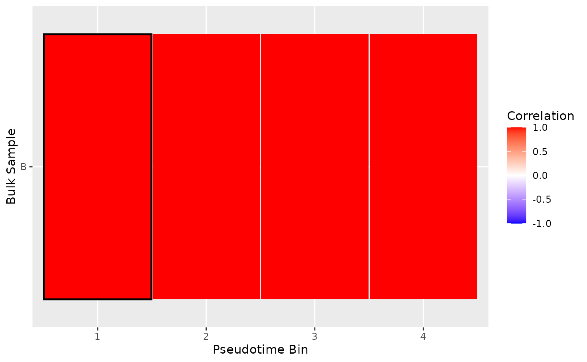
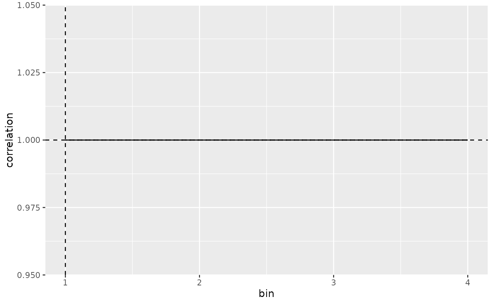
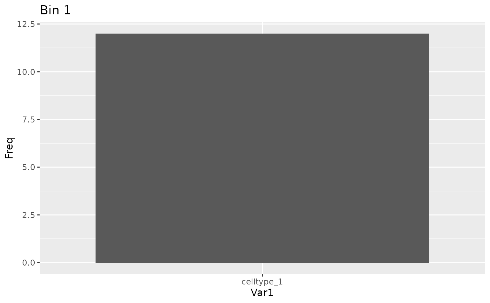

Map the best matching SC bin for a bulk sample
map_best_bin.RdMap the best matching SC bin for a bulk sample
Arguments
- blase_data
The BlaseData holding the bins.
- bulk_id
The sample id of the bulk to analyse.
- bulk_data
The whole bulk read matrix.
- bootstrap_iterations
The number of bootstrapping iterations to run.
Value
A MappingResult object.
Examples
counts_matrix <- matrix(c(seq_len(120)/10, seq_len(120)/5), ncol=48, nrow=5)
sce <- SingleCellExperiment::SingleCellExperiment(assays=list(
normcounts=counts_matrix, logcounts=log(counts_matrix)))
colnames(sce) = seq_len(48)
rownames(sce) = as.character(seq_len(5))
sce$cell_type = c(rep("celltype_1", 24), rep("celltype_2", 24))
sce$pseudotime = seq_len(48)
blase_data = as.BlaseData(sce, pseudotime_slot="pseudotime", n_bins=4)
blase_data@genes = as.character(seq_len(5))
bulk_counts = matrix(seq_len(15)*10, ncol=3, nrow=5)
colnames(bulk_counts) = c("A", "B", "C")
rownames(bulk_counts) = as.character(seq_len(5))
# Map to bin
result = map_best_bin(blase_data, "B", bulk_counts)
#> Warning: no non-missing arguments to min; returning Inf
#> Warning: no non-missing arguments to max; returning -Inf
#> Warning: no non-missing arguments to min; returning Inf
#> Warning: no non-missing arguments to max; returning -Inf
#> Warning: no non-missing arguments to min; returning Inf
#> Warning: no non-missing arguments to max; returning -Inf
#> Warning: no non-missing arguments to min; returning Inf
#> Warning: no non-missing arguments to max; returning -Inf
result
#> MappingResult for 'B': best_bin=1 correlation=1 top_2_distance=0
#> Confident Result: TRUE (next max upper -Inf )
#> with history for scores against 4 bins
#> Bootstrapped with 200 iterations
# Plot Heatmap
plot_mapping_result_heatmap(list(result))

# Plot Correlation
plot_mapping_result_corr(result)

# Plot populations
sce = assign_pseudotime_bins(sce, pseudotime_slot="pseudotime", n_bins=4)
plot_bin_population(sce, result@best_bin, group_by_slot="cell_type")
